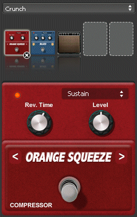

Ton konfigurieren
Guitar
Pro schlägt zwei verschiedene technische Mõglichkeiten vor, um die Partitur
abzuspielen : RSE und MIDI.
RSE Sound
RSE [Realistic Sound Engine]
ist eine einzigartige, und nur auf Guitar Pro begrenzte Audiotechnologie,
die erlaubt den original Klang einer Gitarre, eines Basses oder eines
Drumsets während der Arbeit mit Guitar Pro, zu nutzen. Das Ergebnis ist
eine unwahrscheinlich realistische Wiedergabe. RSE kann, je nach Belieben,
aktiviert oder deaktiviert werden, wählen Sie einfach hierzuüber die
Menüleiste Ton > RSE [Realistic Sound
Engine] benutzen.
Dia Auswahl der Bank erfolgt
in Welt: Instrument,
die Effekteinstellungen der Spur in Welt: Audio und das Mastering in der
Welt: Master.
Mit RSE in Verbindung stehende
Technologien:
Overloud (www.overloud.com)
Guitar Amp, Effect and Stompbox modelisations.
Die Sample wurden aufgenommen
von:
Chocolate
Audio (www.chocolateaudio.com)
The
Ultimate source for samples.
Audioeinstellungen
In Welt: Audioeinstellungen kõnnen Sie Ihre Effektkette konfigurieren
und laden. Ihre Effektkette besteht aus maximum 5 Effekte, und Sie kõnnen
bis zu 4 Variationen pro Spur aufnehmen, das heißt, dass Sie die Mõglichkeit
haben, 4 verschiedene Kette auf der gleichen Spur zu haben (Menü >
Variationen...
). (Zum Beispiel, herunten heißt die Kette "Crunch".)

Klicken Sie auf den Leerräumen, um Effekte einzufügen, auf den Pfeilen
<> um das Pedal in der Effektkette zu bewegen, auf die kleinen Kreuzen
um die Effekte zu lõschen, und auf den Switch (unter den Pedalnamen) um
den Effekt hin und wieder zu erzeugen.
 Hinweis:
Wenn Sie ein Wah-Wah Pedal zu Ihrer Kette einfügen, kann dieses als Filter
dienen oder als echter Wha-Wha Effekt benuzt werden, indem man auf der
Partitur die Positionen Open(o)/Close(+) des
Wah-Wah dank der und Knõpfe anzeigt. Wenn
Sie das Wah-Wah in einem bestimmten Moment einschalten wollen, konfigurieren
Sie zwei Variationen mit einer Kette in der das Wah-Wah hin und wieder
erzeugt wird und eine, wo es aktiv ist.
Hinweis:
Wenn Sie ein Wah-Wah Pedal zu Ihrer Kette einfügen, kann dieses als Filter
dienen oder als echter Wha-Wha Effekt benuzt werden, indem man auf der
Partitur die Positionen Open(o)/Close(+) des
Wah-Wah dank der und Knõpfe anzeigt. Wenn
Sie das Wah-Wah in einem bestimmten Moment einschalten wollen, konfigurieren
Sie zwei Variationen mit einer Kette in der das Wah-Wah hin und wieder
erzeugt wird und eine, wo es aktiv ist.
MIDI
Begriffserklärung:
MIDI - Musical Instrument Digital Interface . Es handelt sich um
ein Protokoll , um eine universelle Sprache, dass digitale musikalische
Informationen zwischen Computern, Synthesizern, Sequenzern, etc.. überträgt.
MIDI-Dateien enthalten Einträge, die eine Partition genau beschreiben:
Noten, Rhythmus, Tempo, Instrumente, etc.
Die Klangqualität hängt von Ihrer Hardware (Soundkarte, Software-oder
Hardware-Synthesizer) und nicht von Guitar Pro selbst ab, welcher einfach
nur Informationenüber Dauer und Hõhe der Noten an Ihre Hardware sendet,
die sich wiederum darum kümmert, sie als Audio zu konvertieren.
Auch die Liste der verfügbaren Instrumente in Guitar Pro ist durch die
General MIDI-Norm definiert und nicht erweiterbar, ausser wenn Sie eine
spezielle Hardware verwenden.
Tonproblem:
Abhängig von Ihrer Soundkarte, ist es mõglich, dass Sie beim Hõren
ein "Knacken"
hõren. In diesem Fall gehen Sie zu Ansicht-Eigenschaften von Windows ®
(rechten Maustaste auf den Windows ®-Desktop, dann Menü:Eigenschaften),
die Registerkarte Einstellungen wählen,
auf die Taste fortgeschritten klicken, die Registerkarte Fehlerbehebung
wählen und Hardware-Beschleunigung auf Keine einstellen.
Ton konfigurieren
Sobald die Soundkarten konfiguriert im Audio-Konfiguration-Fenster (Menü
Ton > Audio-Einstellungen)sind,
nimmt sie Platz in Welt:Instrument und ist konfigurierbar nur, wenn Sie
im Midi-Modus sind(Menü Ton >RSE [Realistic
Sound Engine] F2).
MIDI Ausgang
Sie kõnnen bis zu 4 MIDI-Ports (Anschlüsse) gleichzeitig nutzen mit
Guitar Pro. Jedem Anschluss kõnnen Sie ein anderes MIDI-Gerät zuordnen.
Es wird empfohlen, das beste MIDI-Gerät auf Port 1 zu wählen, der der
Standard beim Erstellen einer neuen Spur in Guitar Pro ist.
MIDI Eingang
Mit dem MIDI Eingang haben Sie die Mõglichkeit mittels einem extern
an den PC angeschlossenes MIDI-Instruments (für Keyboard, Gitarre, etc.),
Noten zu empfangen. (siehe Noten
eingeben.)
MIDI-Ports und Kanäle
In Welt: Instrument kõnnen Sie die für jede Spur gebrauchte Ports oder
Kanäle auswählen.
Guitar Pro benutzt grundsätzlich zwei Kanäle je Spur, Hauptkanal und
Nebenkanal, damit die Wiedergabe von Verzierungen bei Noten verbessert
ist. Wenn zwei Spuren denselben Kanal und denselben Port gleichzeitig
belegen, werden Ihre Audioparameter verbunden (Instrument, Lautstärke,
Balance,…). Es kõnnte somit hilfreich sein, je Spur einen separaten Kanal
zu benutzen falls die Partitur mehrere Spuren enthält.
Laut MIDI-Spezifikation, dürfen Schlaginstrumente
(Percussions) immer nurüber den 10. Kanal gespielt
werden.